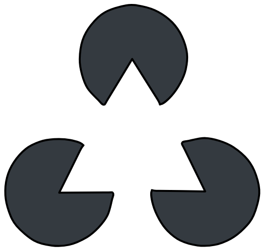
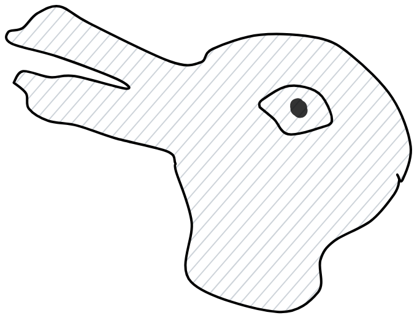
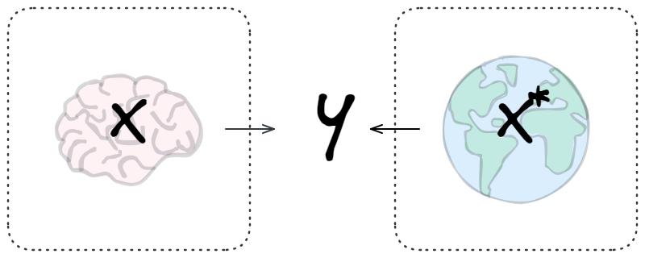
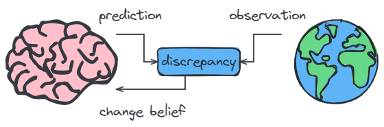
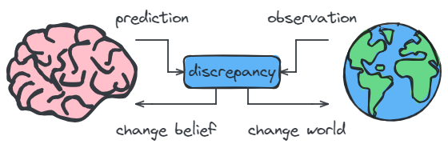

I’ve been on a bit of a binge by reading Surfing Uncertainty1, A Brief History of Intelligence (BHI), and Active Inference and I wanted to write down most of what I’ve learned, and they all relate to the theory of active inference (and Karl Friston). These are my notes from reading the books, but also from listening to-and barely understanding-a couple of podcasts from Machine Learning Street Talk2.
1 Scott Alexander has a decent review of Surfing Uncertainty.
2 For a full list of references, see Section 5
I’m primarily interested in the relationship active inference has with reinforcement learning and planning, so a lot of focus will be spent on the expected free energy. But before any of that, we have to talk about predictive processing and the bayesian brain as a warming up.
The Bayesian Brain


19th century physician and physicist Herman (von) Helmholtz had a theory that could explain why such phenomena occur. Helmholtz was interested in perception, and in his work Treatise on Physiological Optics we can figure out what his theory was3:
3 Taken from Was Helmholtz a Bayesian?
“The distinction between thought and reality is possible only when we know how to distinguish between what the ‘I’ can change and what the ‘I’ cannot change. […] What we then attain is knowledge of the lawful order in the realm of the real, but only in so far as it is represented in the tokens within the system of sensory.”
You don’t perceive what is actually happening, you perceive what your brain thinks is there. Your brain ‘fills in’ the triangle as a suggestion of what could possibly be there. Your brain ‘sees’ either a duck or a rabbit because it picks a single reality to simulate (it’s all just a simulation).
Putting it a bit more (but not too) formal, the universe emits a state \(\mathbf{x}^*\) but we only have access to a noisy and incomplete sensory experience of the state as observation \(\mathbf{y}\). We are constantly predicting \(\mathbf{y}\) (simulating), and in doing so, we are building and strengthening our own internal model \(\mathbf{x}\) that might approximate the true world model4.
4 The universe emits a state but access is mediated by our senses 
5 The paper The Bayesian brain is probably the most notable candidate for coining the term, but the paper actually never mentions the Bayesian Brain beyond the title.
Helmholtz’s ideas about the bayesian brain did not garner much attention in his time. He also didn’t coin the term Bayesian Brain - he didn’t even mention Bayes! In fact, I don’t really know who did coin the term. I asked Claude (Sonnet 3.5) and got a perfect answer: “It’s likely that the term emerged organically as these ideas gained popularity in the neuroscience community.”, which seems to be the most likely case5.
If you want to go a bit deeper do read Karl Friston’s The history of the future of the Bayesian brain, it has a lot of nice anecdotes about Hinton too. A key takeaway from it is that the hypothesis is only a description of optimal behavior, it does not prescribe how decison making emerges.
Predictive processing somewhat builds on the idea of the Bayesian Brain, by focusing on a hierarchical probabilistic models where prediction error is central. When the brain has a mismatch between prediction and sensory input, the brain either updates its model or seeks additional information to resolve the discrepancy:

From this point on many roads are possible that leave from the Bayesian Brain or Predictive Processing theories. Active Inference is one of these roads, and it adds a way to resolve predictive discrepancies.
Active Inference
Agents are actively trying to minimize surprise. The model plays one part here, the data the other part. We can change the way the data is generated, rendering action as a complementary part to perception in inference.
exact Bayesian inference supporting perception and action is computationally intractable in most cases, because two quantities—the model evidence (\(P(y)\)) and the posterior probability (\(P(x \, | \, y)\))—cannot be computed for two possible reasons

To realize active inference, our generative models have to account for two notions of free energy. The first is variational free energy, and is concerned with past and present observations. The second is expected free energy, and it is concerned with planning and looking ahead into the future.
Past & Present: Variational Free Energy
\[ \begin{align} F[Q, y] :&= \text{Variational Free Energy} \\ &= \underbrace{- \mathbb{E}_{Q(x)}[\ln P(y, x)]}_{\textit{Energy}} - \underbrace{H[Q(x)]}_{\textit{Entropy}} \\ &= \underbrace{D_\text{KL}[Q(x) \, \| \, P(x)]}_{\textit{Complexity}} - \underbrace{\mathbb{E}_Q(x)[\ln P(y \, | \, x)]}_{\textit{Accuracy}} \\ &= \underbrace{D_\text{KL}[Q(x) \, \| \, P(x \, | \, y)]}_{\textit{Divergence}} - \underbrace{\ln P(y)}_{\textit{Evidence}} \end{align} \]
We will see how three different views on the variational free energy can give us insight into what we are trying to learn in active inference.
The Maximum Entropy Principle
\[ F[Q, y] = \underbrace{- \mathbb{E}_{Q(x)}[\ln P(y, x)]}_{\textit{Energy}} - \underbrace{H[Q(x)]}_{\textit{Entropy}} \]
The first line of equation 2.5 shows that minimizing with respect to Q requires consistency with the generative model (energy) while also maintaining a high posterior entropy.
The latter means that, in the absence of data or precise prior beliefs (which only influence the energy term), we should adopt maximally uncertain beliefs about the hidden states of the world. This is in line the the maximum entropy principle:
The Minimum Discription Length
\[ F[Q, y] = \underbrace{D_\text{KL}[Q(x) \, \| \, P(x)]}_{\textit{Complexity}} - \underbrace{\mathbb{E}_Q(x)[\ln P(y \, | \, x)]}_{\textit{Accuracy}} \]
The second line emphasizes the interpretation of free energy minimization as finding the best explanation for sensory data, which must be the simplest (minimally complex) explanation that is able to accurately account for the data (cf. Occam’s razor). On this view, the complexity cost is just Bayesian surprise. In other words, the degree to which “I change my mind” is quantified by the divergence between the prior and the posterior. This means every accurate explanation for my sensations incurs a complexity cost, and this cost scores the degree of Bayesian belief updating. Variational free energy, then, scores the difference between accuracy and complexity.
Minimizing Divergence, Maximizing Evidence
\[ F[Q, y] = \underbrace{D_\text{KL}[Q(x) \, \| \, P(x \, | \, y)]}_{\textit{Divergence}} - \underbrace{\ln P(y)}_{\textit{Evidence}} \]
The final line expresses the free energy as a bound on negative log evidence (see figure 2.4). As the left part of the figure illustrates, the free energy is an upper bound on negative log evidence, where the bound is the divergence between Q and the posterior probability that would have been obtained were it possible to perform exact (as opposed to variational) infer
Future: Expected Free Energy
References
| Type | Date | Name | Link |
|---|---|---|---|
| MLSS | Sep 5 2023 | Autopoietic Enactivism and the Free Energy Principle | https://www.youtube.com/watch?v=bL00-jtRrMA |
| MLSS | Mar 2 2022 | Prof. KARL FRISTON 2.0 [Unplugged] | https://www.youtube.com/watch?v=xKQ-F2-o8uM |
| MLSS | Dec 13 2020 | Karl Friston - The Free Energy Principle | https://www.youtube.com/watch?v=KkR24ieh5Ow |
| MLSS | Mar 11 2023 | KARL FRISTON - INTELLIGENCE 3.0 | https://www.youtube.com/watch?v=V_VXOdf1NMw |
| MLSS | May 2 2024 | Dr. THOMAS PARR - Active Inference | https://www.youtube.com/watch?v=bk_xCikDUDQ |
| Book | Mar 29 2022 | Active Inference (open access) | https://mitpress.mit.edu/9780262045353/active-inference/ |
| Article | Feb 6 2023 | How Our Reality May Be a Sum of All Possible Realities | https://www.quantamagazine.org/how-our-reality-may-be-a-sum-of-all-possible-realities-20230206/ |